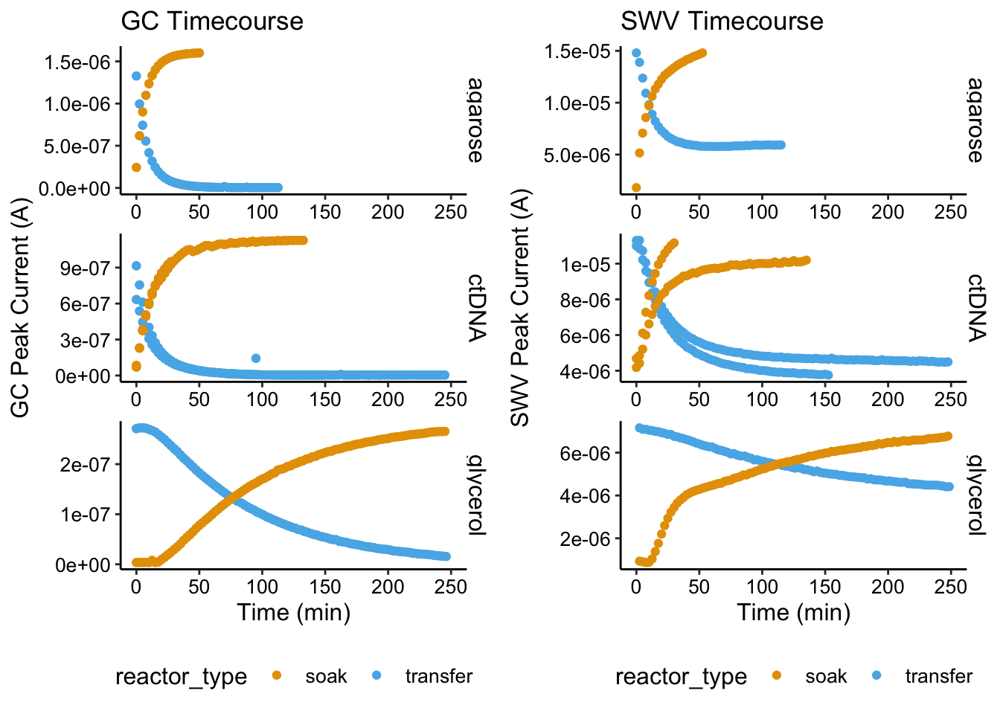
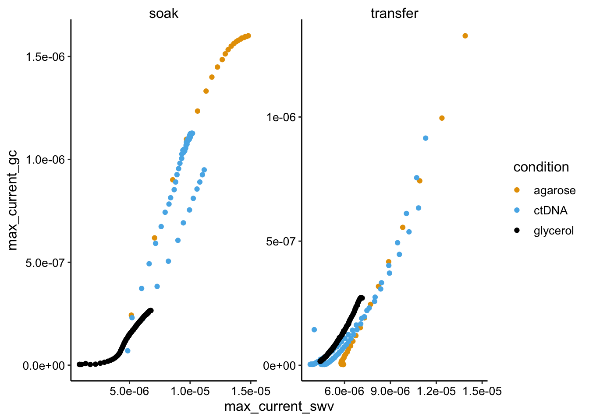
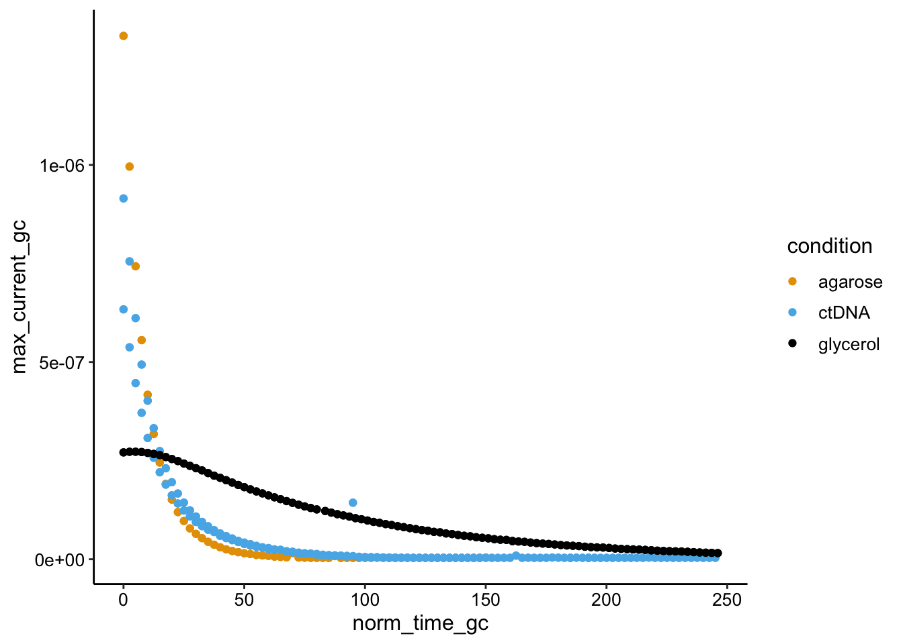
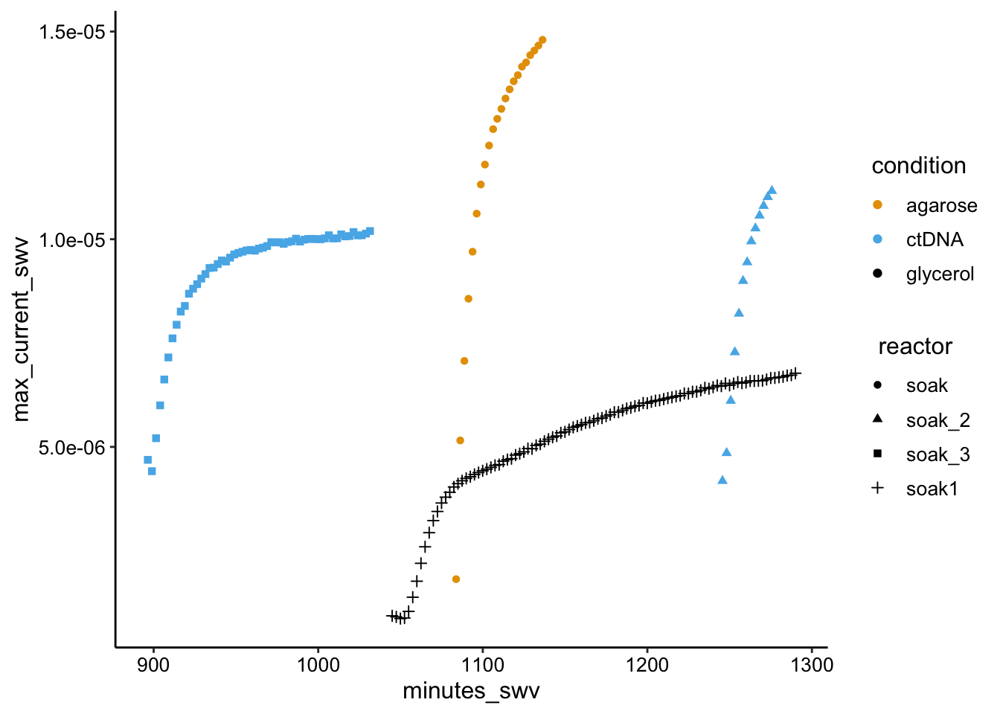
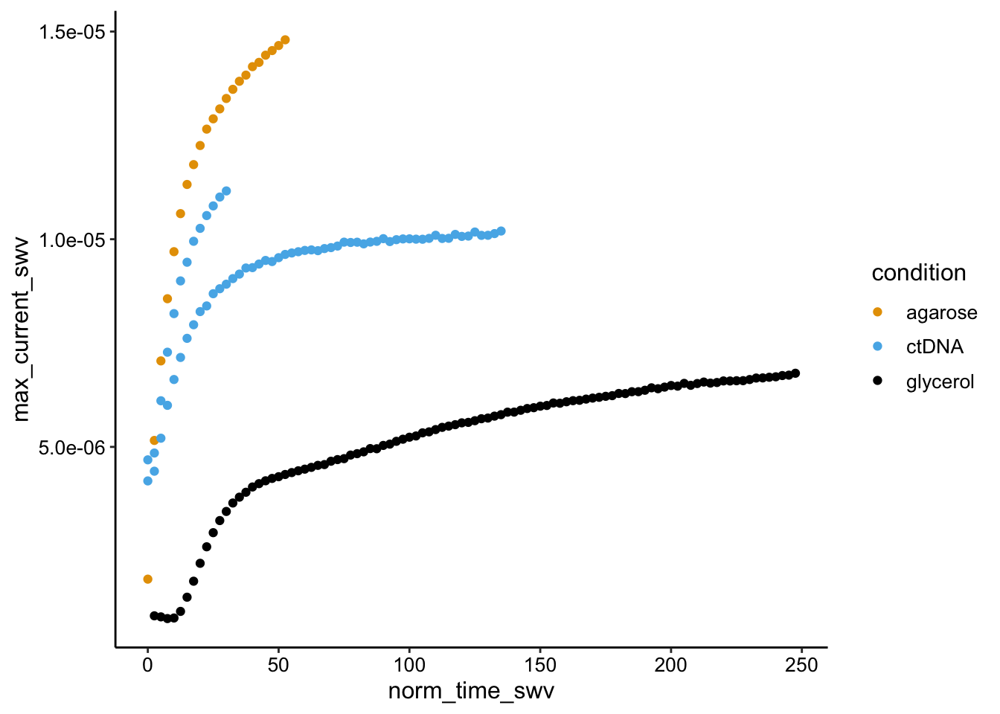
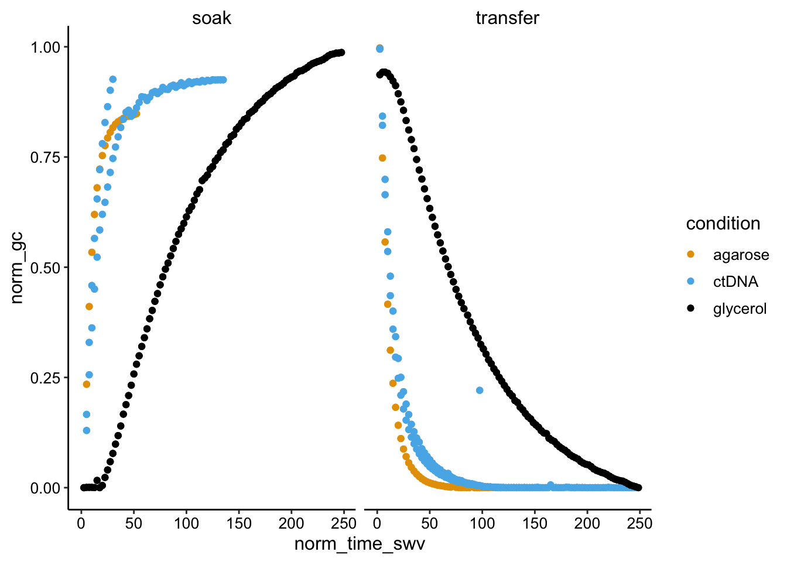
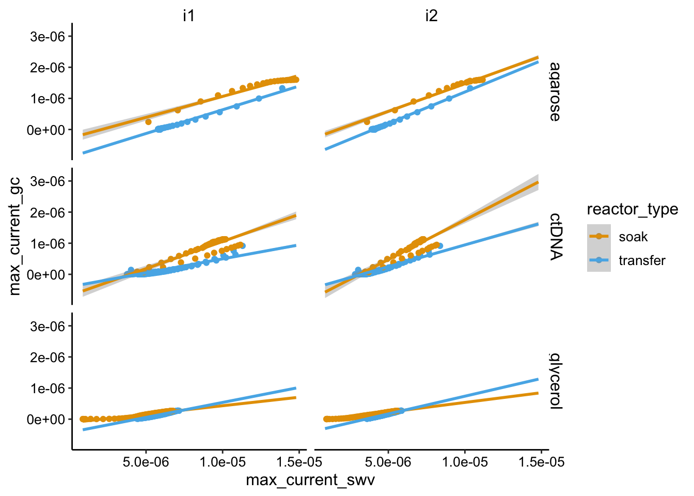

Agarose Glycerol
Analysis
Scott Saunders
08_15_19
library(tidyverse)
library(cowplot)
library(broom)
library(modelr)
library(viridis)
library(lubridate)
library(hms)
library(knitr)
library(kableExtra)
knitr::opts_chunk$set(tidy.opts=list(width.cutoff=60),tidy=TRUE, echo = TRUE, message=FALSE, warning=FALSE, fig.align="center")
source("../../tools/echem_processing_tools.R")
source("../../tools/plotting_tools.R")
theme_set(theme_1())Overview
This agarose glycerol dataset is the third and final condition for a set of in vitro experiments aimed at better understanding the echem results we get with the biofilms and PYO.
The three conditions were:
- 1% Agarose
- 1% Agarose with 1 mg/mL calf thymus DNA
- 1% Agarose with 50% glycerol
Recall that the main echem ‘phenotype’ we observe with the biofilm is that \(D_{ap}\) is higher than \(D_{phys}\) - for example see this notebook. The reviewers were concerned about the accuracy of our \(D_{phys}\) measurement and I also thought it was possible that the geometry of the biofilms was having an unintended effect on the \(D_{phys}\) measurement. Therefore, we wanted to perform an experiment that would hopefully clarify whether or not the biofilm phenotype we observe is due to purely physical diffusion and an artifact in the \(D_{phys}\) measurement, or actually due to self exchange.
I reasoned that if calf thymus DNA were sufficient to generate a difference between \(D_{ap}\) and \(D_{phys}\) in vitro, that would support the self exchange model. If it is not sufficient and \(D_{ap}\) is identical to \(D_{phys}\) that might suggest that the \(D_{phys}\) measurement is thrown off by the heterogeneity of the biofilm / weird geometry. Therefore in this experiment we compared a condition +/- DNA.
The glycerol was sort of used as another control, since we know that glycerol should slow physical diffusion, but we also expect \(D_{ap} = D_{phys}\).
Lastly, I chose to encapsulate the electrodes in agarose, because I was familiar with this system, and it yields relatively nice measurements. It also clearly distinguishes the region measured by the electrode from the solution.
Methods
The agarose was made by dissolving to 1% by weight in PBS 50 (50mM NaCl, pH 7.0), or 2% agarose in PBS 50 then mixing in (1:1) the 2mg / mL ctDNA stock (also in PBS 50), or by making 1% agarose in PBS 50 containing 50% glycerol (2x PBS was made then mixed 1:1 with glycerol). Mixture were microwaved for ~1 min then molten agarose was transferred from small flasks to 15mL conicals and incubated in the 60 degree water bath. When ready, 50uL of agarose was deposited directly onto the IDA working surface and allowed to solidify at room temp for > 30 min. These experiments were done on totally different days.
The same GC and SWV settings were used as normal - see the file headers for specifics. Acquisitions were acquired using the macro as normal. IDAs were soaked in 75uM PYO and then transferred to fresh medium (either PBS 50 or PBS 50 w/ 50% glycerol). I have not settled on a super standardized workflow for this yet, but I took scans as the PYO diffused into the gel - Soak, and as it diffused out - Transfer. Some of these scans were taken repeatedly or at different times, so there’s no guarantee that the conditions were totally equilibrated etc, as you will see.
These datasets were processed in their own notebooks. See processing folders for 06/06/19, 08/13/19, and 08/15/19. Overall, the raw data look pretty well behaved, although the SWVs have persistent background as usual.
Data
First I’ll read in all the processed data from the three different experiments. Here you can see that we have all the information we need including timing, conditions, and current values.
swvGC_agarose <- read_csv("../../06_06_19_agarose_PYO_2/Processing/06_06_19_processed_swvGC_agarose.csv") %>%
group_by(reactor) %>% mutate(min_time_gc = min(minutes_gc,
na.rm = T), min_time_swv = min(minutes_swv, na.rm = T)) %>%
mutate(norm_time_gc = minutes_gc - min_time_gc, norm_time_swv = minutes_swv -
min_time_swv) %>% mutate(condition = "agarose")
swvGC_ctDNA <- read_csv("../../08_13_19_agarose_ctDNA/processing/08_13_19_processed_swvGC_ctDNA.csv") %>%
mutate(minutes_gc = ifelse(minutes_gc < 850, minutes_gc +
1440, minutes_gc)) %>% mutate(minutes_swv = ifelse(minutes_swv <
850, minutes_swv + 1440, minutes_swv)) %>% group_by(reactor) %>%
mutate(min_time_gc = min(minutes_gc, na.rm = T), min_time_swv = min(minutes_swv,
na.rm = T)) %>% mutate(norm_time_gc = minutes_gc - min_time_gc,
norm_time_swv = minutes_swv - min_time_swv) %>% mutate(condition = "ctDNA")
swvGC_glycerol <- read_csv("../processing/08_15_19_processed_swv_gc_max_glycerol.csv") %>%
filter(electrode_gc == "i2") %>% mutate(condition = "glycerol")
swv_gc_df <- bind_rows(swvGC_agarose, swvGC_ctDNA, swvGC_glycerol) %>%
mutate(reactor_type = ifelse(reactor %in% c("soak", "soak_2",
"soak_3", "soak1"), "soak", "transfer"))
swv_gc_df %>% head() %>% kable() %>% kable_styling(bootstrap_options = c("striped",
"condensed", "responsive"), full_width = F)| echem_swv | rep | minutes_swv | E_swv | electrode_swv | current_swv | max_current_swv | echem_gc | minutes_gc | E_gc | electrode_gc | current_gc | max_current_gc | reactor | min_time_gc | min_time_swv | norm_time_gc | norm_time_swv | condition | reactor_type |
|---|---|---|---|---|---|---|---|---|---|---|---|---|---|---|---|---|---|---|---|
| swv | 0 | 1139.783 | -0.274 | i1 | 1.48e-05 | 1.48e-05 | NA | NA | NA | NA | NA | NA | transfer | 1142.1 | 1139.783 | NA | 0.0 | agarose | transfer |
| swv | 9 | 1162.283 | -0.264 | i1 | 7.00e-06 | 7.00e-06 | gc | 1162.117 | -0.399 | i2 | -2e-07 | 2e-07 | transfer | 1142.1 | 1139.783 | 20.01667 | 22.5 | agarose | transfer |
| swv | 10 | 1164.783 | -0.260 | i1 | 6.70e-06 | 6.70e-06 | gc | 1164.617 | -0.399 | i2 | -1e-07 | 1e-07 | transfer | 1142.1 | 1139.783 | 22.51667 | 25.0 | agarose | transfer |
| swv | 11 | 1167.283 | -0.257 | i1 | 6.50e-06 | 6.50e-06 | gc | 1167.117 | -0.399 | i2 | -1e-07 | 1e-07 | transfer | 1142.1 | 1139.783 | 25.01667 | 27.5 | agarose | transfer |
| swv | 12 | 1169.783 | -0.251 | i1 | 6.40e-06 | 6.40e-06 | gc | 1169.617 | -0.399 | i2 | -1e-07 | 1e-07 | transfer | 1142.1 | 1139.783 | 27.51667 | 30.0 | agarose | transfer |
| swv | 13 | 1172.283 | -0.254 | i1 | 6.20e-06 | 6.20e-06 | gc | 1172.117 | -0.399 | i2 | -1e-07 | 1e-07 | transfer | 1142.1 | 1139.783 | 30.01667 | 32.5 | agarose | transfer |
\(D_{phys}\) Overview
Let’s look at an overview of the data to give you a sense for it. Here I’ll just plot the max current over time for each condition (GC and SWV separately). Bear in mind that each condition had soak and transfer acquisitions and some are replicates too.
gc_overview <- ggplot(swv_gc_df, aes(x = norm_time_gc, y = max_current_gc,
color = reactor_type)) + geom_point() + facet_wrap(~condition,
ncol = 1, scales = "free", strip.position = "right") + xlim(0,
250) + labs(x = "Time (min)", y = "GC Peak Current (A)",
title = "GC Timecourse") + theme(legend.position = "bottom")swv_overview <- ggplot(swv_gc_df %>% filter(electrode_swv ==
"i1"), aes(x = norm_time_swv, y = max_current_swv, color = reactor_type)) +
geom_point() + facet_wrap(~condition, ncol = 1, scales = "free",
strip.position = "right") + xlim(0, 250) + labs(x = "Time (min)",
y = "SWV Peak Current (A)", title = "SWV Timecourse") + theme(legend.position = "bottom")plot_grid(gc_overview, swv_overview)
Ok, so the the soak and transfer conditions mirror each other pretty well. We can clearly see that the glycerol equilibrations are much slower than the other two. It is not obvious at this point if the ctDNA is slower than the agarose. The other thing to notice is the difference between the GC and SWV signals. They show the same patterns, but the biggest thing is that the SWV never returns to zero. This implies a irreversible background signal…something that is stuck to the electrode that doesn’t wash away and doesn’t contribute to GC signal. We’ve seen this before…not sure how we can get rid of it, but we have to hope that the change in SWV signal isn’t affected by this.
\(D_{ap}\) Overview
The other big overview we can look at is the SWV vs. GC plots to assess \(D_{ap}\).
ggplot(swv_gc_df %>% filter(electrode_swv == "i1"), aes(x = max_current_swv,
y = max_current_gc, color = condition)) + geom_point() +
facet_wrap(~reactor_type, scales = "free")
Here we see mostly the expected linear behavior, but there are some significant deviations. There is a particularly strong deviation for the glycerol soak condition and I don’t really known why. You can see in the first overview plot that the SWV current rises sharply - more sharply than GC, perhaps it’s some weird thing with the glycerol gel equilibrating (this was the initial soak). Anyway the slopes of the plots are not radically different, but there may be some differences. Particularly there is a linear region of the glycerol soak that is clearly a lower slope than the others. We would expect that to be true in this condition. We will have to quantify these plots to better explore this.
Extra Plots
ggplot(swv_gc_df %>% filter(reactor_type == "transfer"), aes(x = norm_time_gc,
y = max_current_gc, color = condition)) + geom_point()
ggplot(swv_gc_df %>% filter(electrode_swv == "i1" & reactor_type ==
"soak"), aes(x = minutes_swv, y = max_current_swv, color = condition,
shape = reactor)) + geom_point()
ggplot(swv_gc_df %>% filter(electrode_swv == "i1" & reactor_type ==
"soak"), aes(x = norm_time_swv, y = max_current_swv, color = condition)) +
geom_point()
#+ facet_grid(rows = 'condition', scale = 'free_y')swv_gc_norm <- swv_gc_df %>% group_by(condition, reactor, electrode_gc,
electrode_swv) %>% mutate(norm_gc = (max_current_gc - min(max_current_gc))/max(max_current_gc)) %>%
mutate(norm_swv = (max_current_swv - min(max_current_swv))/max(max_current_swv))
ggplot(swv_gc_norm, aes(x = norm_time_swv, y = norm_gc, color = condition)) +
geom_point() + facet_wrap(~reactor_type)
ggplot(swv_gc_df, aes(x = max_current_swv, y = max_current_gc,
color = reactor_type)) + geom_point() + facet_grid(condition ~
electrode_swv) + geom_smooth(method = "lm", fullrange = T)
ggplot(swv_gc_df %>% filter(electrode_swv == "i1"), aes(x = max_current_swv,
y = max_current_gc, color = condition)) + geom_point() +
facet_wrap(~reactor_type, scales = "free")